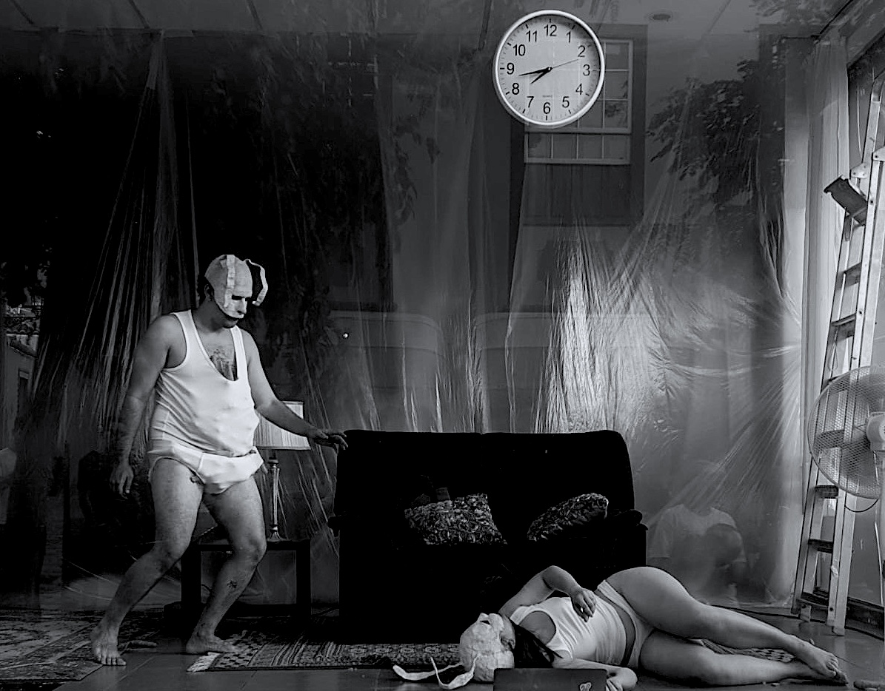
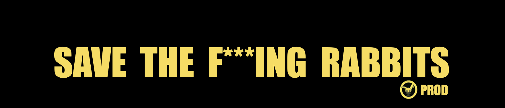
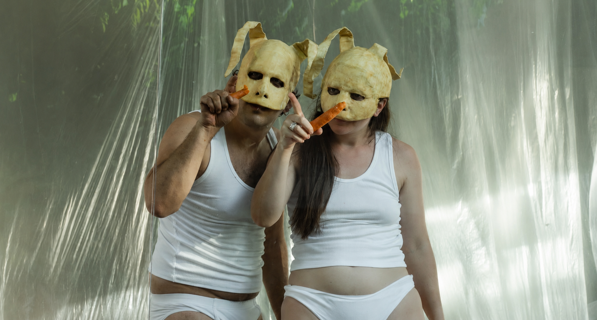
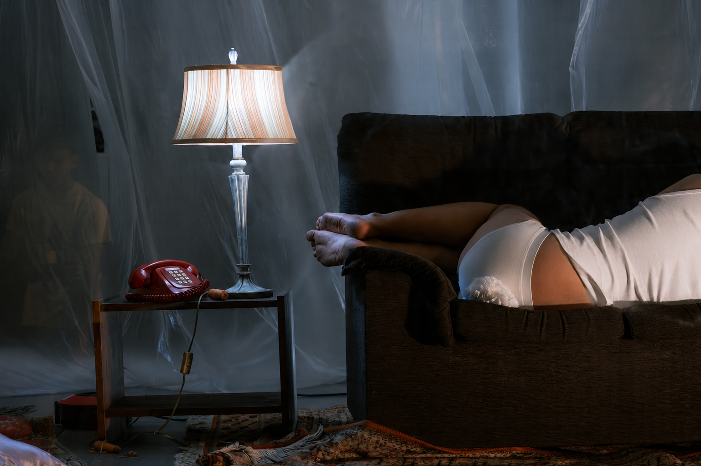
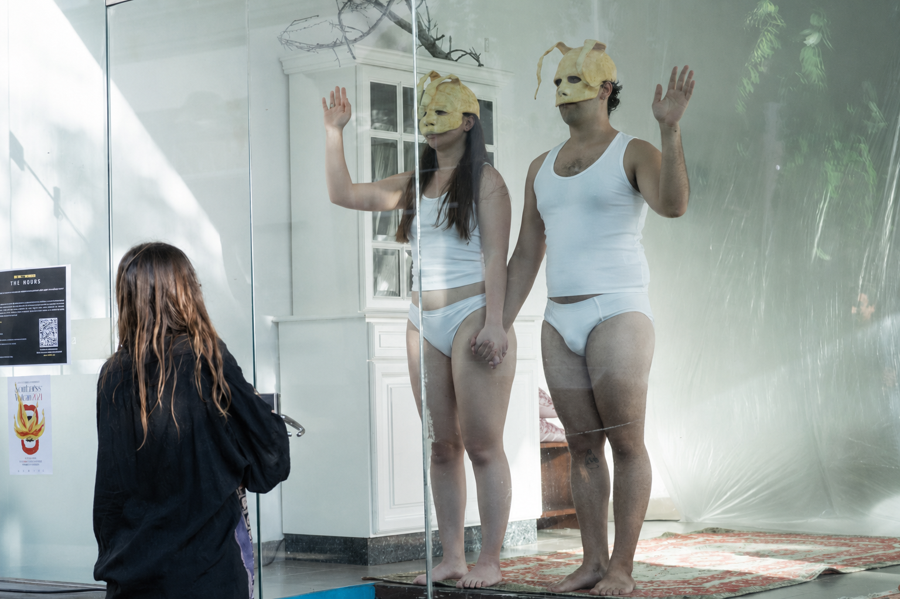
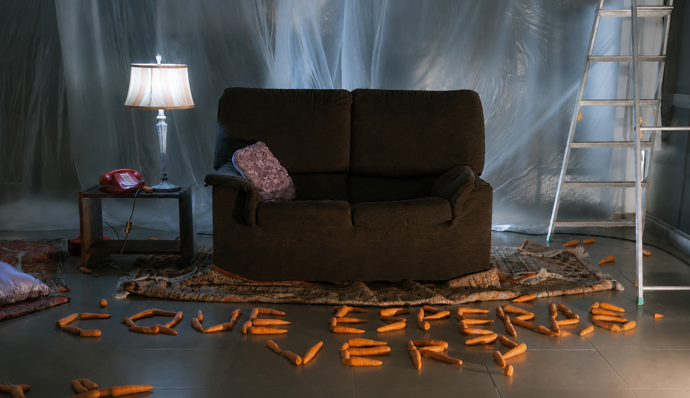

THE HOURS es una instalación escénica y performance duracional que surge a raíz de la necesidad de expandir y diversificar el universo creado en la pieza de teatro SAVE THE F***ING RABBITS.
En continuidad con la pieza original —que explora la insatisfacción crónica como secuela de las expectativas impuestas por la sociedad neoliberal—, esta propuesta se adentra en los límites del aburrimiento, el agotamiento físico y el desgaste psicológico a través de una premisa de acción ininterrumpida durante 24 horas. Dos performers, a partir de ahora Conejo 1 y Conejo 2, equipados con sus característicos atuendos, convivirán durante un día y una noche en un espacio cerrado con llave, equipado únicamente con un sofá, un reloj y una televisión encendida las veinticuatro horas.
La propuesta busca radicalizar la experiencia del presente. No habrá más estímulos que los de un animal privado de su entorno, reducido a su propia jaula.
La pieza se lleva a cabo en un escaparate acristalado, a la vista de cualquier transeúnte que pase por el lugar. Sin convocatoria previa, cualquier persona puede convertirse en un espectador espontáneo de esta experiencia.
Aunque esté concebida para desarrollarse en un cubículo acristalado, esta estructura puede desaparecer y trasladarse al propio suelo, delimitando el área de acción sin necesidad de paredes. De este modo, THE HOURS puede adaptarse a diferentes espacios, desde museos y espacios escénicos hasta lugares no convencionales, y presentarse tanto en festivales como en otros contextos de programación. La duración, planteada inicialmente para 24 horas, también puede modificarse en función de las características y horarios de cada lugar.
Los rastros y transformaciones que surgen durante la experiencia no son únicamente consecuencia de la acción, sino que forman parte de la propia pieza y pueden permanecer en el espacio una vez finalizada, configurando una instalación escénica como huella de lo acontecido.
Los espectadores dispondrán de un código QR adherido al escaparate desde el que podrán acceder a una retransmisión en directo de lo que sucede en el interior, así como a contenido adicional del proyecto.
¿Cuánto tiempo de nuestras vidas estamos dispuestos a invertir en algo que no estaba previsto?




